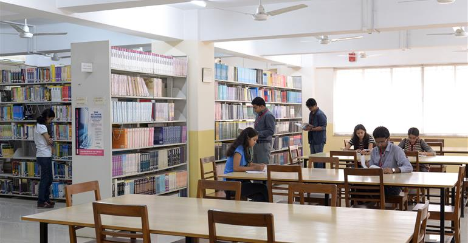
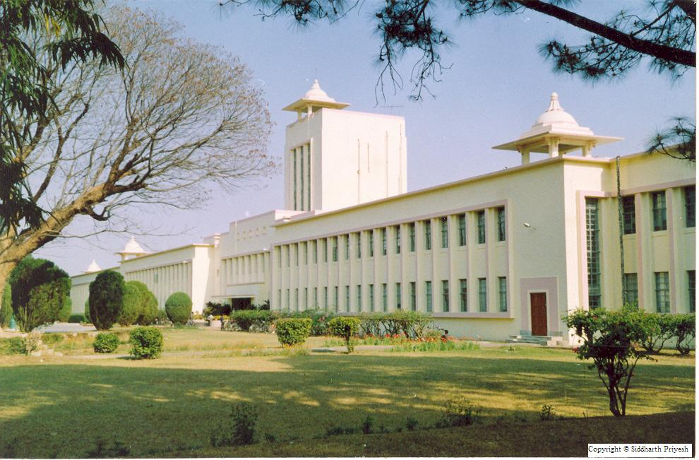

BIT MESRA HAS BEEN ON THE FRONT LINES
of changing the world for almost two centuries, often serving as the prototype for progress even in the face of strong resistance.
of changing the world for almost two centuries, often serving as the prototype for progress even in the face of strong resistance.
Library

Computer Lab

Administratve Building
- Established in 1955 by Mr. B M Birla.A premier technical institute and deemed University.
- Main Campus Size - 780 acres
- Total number of registered students across all centres - more than 10,000.Doctoral students - 150
- Programmes offered - Undergraduate, Post- graduate, Doctoral
- Graduate degrees awarded - over 18,000
- Postgraduate degrees offered - over 2500
- To educate students at Under Graduate, Post Graduate, Doctoral, and Post-Doctoral levels to perform challenging engineering and managerial jobs in industry.
- To provide excellent research and development facilities to take up Ph.D. programmes and research projects.
- To develop effective teaching learning skills and state of art research potential of the faculty.
- To build national capabilities in technology, education, and research in emerging areas.
- To provide excellent technological services to satisfy the requirements of the industry and overall academic needs of society.
- Establish a department dedicated to Space Engineering & Rocketry way back in 1964.
- Introduce the concept of Small Industries Entrepreneurs' Park, which has become very successful since then.
- Provide 'nursery sheds' and central designing and workshop facilities to young entrepreneurs. It also facilitated the initial project funding.
- Establish overseas extension centres in the year 2000.
- It is one of the few Universities to be accorded a Super Computer at the core of its ultramodern IT infrastructure.